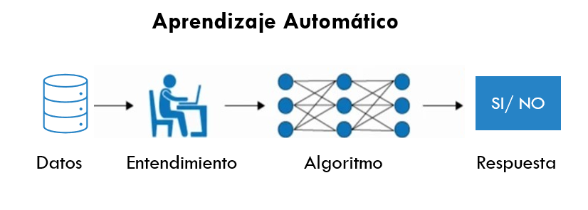
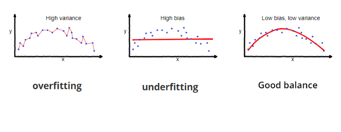
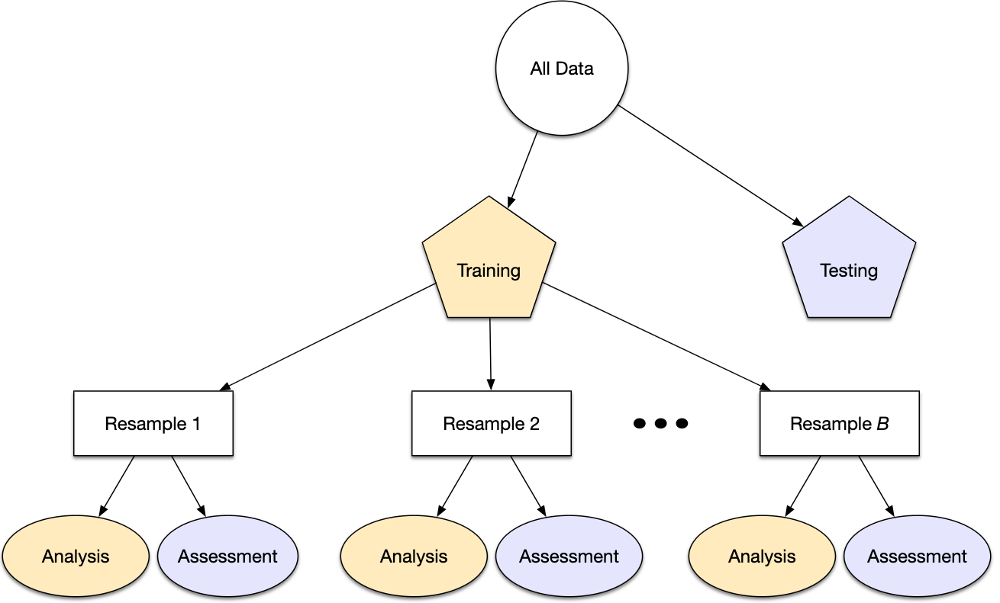
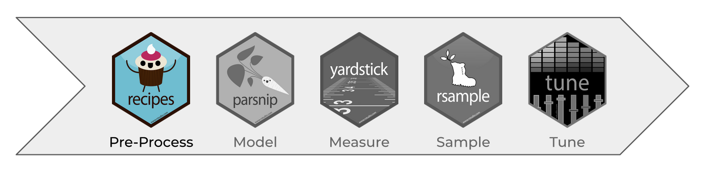
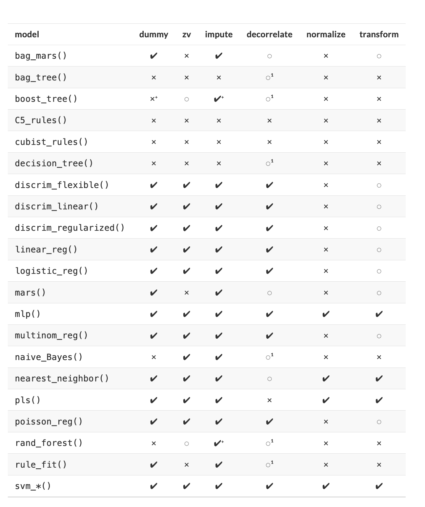

Capítulo 1 Repaso
En los cursos anteriores, hemos hablando a cerca del proceso completo de Ciencia de Datos, para poder empezar con la segunda parte del curso de Analisis Supervisado, valele la pena hacer un breve repaso de lo que hemos estudiado hasta el momento.
1.1 Machine Learning
Machine Learning o –aprendizaje automático– es una rama de la inteligencia artificial que permite que las máquinas aprendan de los patrones existentes en los datos. Se usan métodos computacionales para aprender de datos con el fin de producir reglas para mejorar el desempeño en alguna tarea o toma de decisión. (Está enfocado en la programación de máquinas para aprender de los patrones existentes en datos principalmente estructurados y anticiparse al futuro)

1.2 Tipos de aprendizaje
Platicamos en el módulo pasado que al hablar de Machine Learning, existen distintos tipos de aprendizaje, siendo los más comúnes:
- Aprendizaje supervisado
- Aprendizaje no supervisado
Otreos ejemplos de especialidades son
- Aprendizaje profundo
- Aprendizaje por refuerzo
La diferencia entre el análisis supervisado y el no supervisado es la etiqueta, es decir, en el análisis supervisado tenemos una etiqueta “correcta” y el objetivo de los algoritmos es predecir esta etiqueta.
1.2.1 Aprendizaje supervisado
Conocemos la respuesta correcta de antemano.
Esta respuesta correcta fue “etiquetada” por un humano (la mayoría de las veces, en algunas circunstancias puede ser generada por otro algoritmo).
Debido a que conocemos la respuesta correcta, existen muchas métricas de desempeño del modelo para verificar que nuestro algoritmo está haciendo las cosas “bien”.
1.2.1.1 Tipos de aprendizaje supervisado (Regresión vs clasificación)
Existen dos tipos principales de aprendizaje supervisado, esto depende del tipo de la variable respuesta:
Los algoritmos de clasificación se usan cuando el resultado deseado es una etiqueta discreta, es decir, clasifican un elemento dentro de diversas clases.
En un problema de regresión, la variable target o variable a predecir es un valor numérico.

1.2.2 Aprendizaje no supervisado
Aquí no tenemos la respuesta correcta de antemano ¿cómo podemos saber que el algoritmo está bien o mal?
Estadísticamente podemos verificar que el algoritmo está bien
Siempre tenemos que verificar con el cliente si los resultados que estamos obteniendo tienen sentido de negocio. Por ejemplo, número de grupos y características
1.3 Errores: Sesgo vs varianza
En el mundo de Machine Learning cuando desarrollamos un modelo nos esforzamos para hacer que sea lo más preciso, ajustando los parámetros, pero la realidad es que no se puede construir un modelo 100% preciso ya que nunca pueden estar libres de errores.
Comprender cómo las diferentes fuentes de error generan sesgo y varianza nos ayudará a mejorar el proceso de ajuste de datos, lo que resulta en modelos más precisos, adicionalmente también evitará el error de sobreajuste y falta de ajuste.
- Error por sesgo:
Es la diferencia entre la predicción esperada de nuestro modelo y los valores verdaderos. Aunque al final nuestro objetivo es siempre construir modelos que puedan predecir datos muy cercanos a los valores verdaderos, no siempre es tan fácil porque algunos algoritmos son simplemente demasiado rígidos para aprender señales complejas del conjunto de datos.
Imagina ajustar una regresión lineal a un conjunto de datos que tiene un patrón no lineal, no importa cuántas observaciones más recopiles, una regresión lineal no podrá modelar las curvas en esos datos. Esto se conoce como underfitting.
- Error por varianza:
Se refiere a la cantidad que la estimación de la función objetivo cambiará si se utiliza diferentes datos de entrenamiento. La función objetivo se estima a partir de los datos de entrenamiento mediante un algoritmo de Machine Learning, por lo que deberíamos esperar que el algoritmo tenga alguna variación. Idealmente no debería cambiar demasiado de un conjunto de datos de entrenamiento a otro.

Los algoritmos de Machine Learning que tienen una gran varianza están fuertemente influenciados por los detalles de los datos de entrenamiento, esto significa que los detalles de la capacitación influyen en el número y los tipos de parámetros utilizados para caracterizar la función de mapeo.
- Error irreducible: El error irreducible no se puede reducir, independientemente de qué algoritmo se usa. También se le conoce como ruido y, por lo general, proviene por factores como variables desconocidas que influyen en el mapeo de las variables de entrada a la variable de salida, un conjunto de características incompleto o un problema mal enmarcado. Acá es importante comprender que no importa cuán bueno hagamos nuestro modelo, nuestros datos tendrán cierta cantidad de ruido o un error irreductible que no se puede eliminar.
1.4 Partición de datos
Cuando hay una gran cantidad de datos disponibles, una estrategia inteligente es asignar subconjuntos específicos de datos para diferentes tareas, en lugar de asignar la mayor cantidad posible solo a la estimación de los parámetros del modelo.
Si el conjunto inicial de datos no es lo suficientemente grande, habrá cierta superposición de cómo y cuándo se asignan nuestros datos, y es importante contar con una metodología sólida para la partición de datos.
1.4.1 Métodos comunes para particionar datos
El enfoque principal para la validación del modelo es dividir el conjunto de datos existente en dos conjuntos distintos:
Entrenamiento: Este conjunto suele contener la mayoría de los datos, los cuales sirven para la construcción de modelos donde se pueden ajustar diferentes modelos, se investigan estrategias de ingeniería de características, etc.
La mayor parte del proceso de modelado se utiliza este conjunto.
Prueba: La otra parte de las observaciones se coloca en este conjunto. Estos datos se mantienen en reserva hasta que se elijan uno o dos modelos como los de mejor rendimiento.
El conjunto de prueba se utiliza como árbitro final para determinar la eficiencia del modelo, por lo que es fundamental mirar el conjunto de prueba una sola vez.
Supongamos que asignamos el \(80\%\) de los datos al conjunto de entrenamiento y el \(20\%\) restante a las pruebas. El método más común es utilizar un muestreo aleatorio simple.
En Python, scikit-learn tiene herramientas para realizar divisiones de datos como esta;
la función train_test_split() cubre este propósito.
from sklearn.model_selection import train_test_split
from dsml_utils import load_ames
ames = load_ames()
# Fijar una semilla para que los resultados puedan ser reproducibles.
ames_train, ames_test = train_test_split(
ames,
train_size=0.80,
random_state=123,
)
{
"train": ames_train.shape,
"test": ames_test.shape,
"total": ames.shape,
}## {'train': (1168, 81), 'test': (292, 81), 'total': (1460, 81)}La información impresa denota la cantidad de datos en el conjunto de entrenamiento \((n = 2,344)\), la cantidad en el conjunto de prueba \((n = 586)\) y el tamaño del grupo original de muestras \((n = 2,930)\).
El objeto ames_split es un objeto rsplit y solo contiene la información de partición; para obtener los conjuntos de datos resultantes, aplicamos dos funciones más:
ames_train.shape## (1168, 81)No hay un porcentaje de división óptimo para el conjunto de entrenamiento y prueba.
Los porcentajes de división más comunes comunes son:
- Entrenamiento: \(80\%\), Prueba: \(20\%\)
- Entrenamiento: \(67\%\), Prueba: \(33\%\)
- Entrenamiento: \(50\%\), Prueba: \(50\%\)
1.4.2 Conjunto de validación
El conjunto de validación se definió originalmente cuando los investigadores se dieron cuenta de que medir el rendimiento del conjunto de entrenamiento conducía a resultados que eran demasiado optimistas.
Esto llevó a modelos que se sobreajustaban, lo que significa que se desempeñaron muy bien en el conjunto de entrenamiento pero mal en el conjunto de prueba.
Para combatir este problema, se retuvo un pequeño conjunto de datos de validación y se utilizó para medir el rendimiento del modelo mientras este está siendo entrenado. Una vez que la tasa de error del conjunto de validación comenzara a aumentar, la capacitación se detendría.
En otras palabras, el conjunto de validación es un medio para tener una idea aproximada de qué tan bien se desempeñó el modelo antes del conjunto de prueba.
Por otra parte esta primera particíón de datos evolucionó hasta la manera en que usualmente se hacen con más de una validación:

1.5 Recetas y tratamiento de datos
La ingenería de datos y procesamiento de datos es parte vital del desarrollo de un buen modelo.
En este curso analizaremos distintos métodos de machine learning que permitirán predecir una respuesta numérica o categórica. Usaremos el lenguaje de programación Python para dicho procesamiento.
Hay varios pasos que se deben de seguir para crear un modelo útil:
- Recopilación de datos.
- Limpieza de datos.
- Creación de nuevas variables.
- Estimación de parámetros.
- Selección y ajuste del modelo.
- Evaluación del rendimiento.
Al comienzo de un proyecto, generalmente hay un conjunto finito de datos disponibles para todas estas tareas.
OJO: A medida que los datos se reutilizan para múltiples tareas, aumentan los riesgos de agregar sesgos o grandes efectos de errores metodológicos.
1.5.1 Pre-procesamiento de datos

Como punto de partida para nuestro flujo de trabajo de aprendizaje automático, necesitaremos datos de entrada.
En la mayoría de los casos, estos datos se cargarán y almacenarán en forma de DataFrame de pandas.
Incluirán una o varias variables predictoras y, en caso de aprendizaje supervisado, también incluirán un resultado conocido.
Sin embargo, no todos los modelos pueden lidiar con diferentes problemas de datos y, a menudo, necesitamos transformar los datos para obtener el mejor rendimiento posible del modelo. Este proceso se denomina pre-procesamiento y puede incluir una amplia gama de pasos, como:
- Dicotomización de variables
- Near Zero Value (nzv) o Varianza Cero
- Imputaciones
- Des-correlacionar
- Normalizar
- Transformar
- Creación de nuevas variables
- Interacciones
En la tabla, \(\checkmark\) indica que el método es obligatorio para el modelo y \(\times\) indica que no lo es. El símbolo \(\circ\) significa que la técnica puede ayudar al modelo, pero no es obligatorio.

1.5.2 Recetas
Una receta es una serie de pasos o instrucciones para el procesamiento de datos. A diferencia del método de fórmula dentro de una función de modelado, la receta define los pasos sin ejecutarlos inmediatamente; es sólo una especificación de lo que se debe hacer. La estructura de una receta sigue los siguientes pasos:
- Inicialización
Pipeline()oColumnTransformer() - Transformación mediante pasos como
SimpleImputer(),StandardScaler(),OneHotEncoder() - Preparación
fit() - Aplicación
transform()opredict()
La siguiente sección explica la estructura y flujo de transformaciones:
from sklearn.compose import ColumnTransformer
from sklearn.impute import SimpleImputer
from sklearn.pipeline import Pipeline
from sklearn.preprocessing import OneHotEncoder, StandardScaler
X_train = dataset.drop(columns="response")
y_train = dataset["response"]
numeric_features = X_train.select_dtypes(include="number").columns
categorical_features = X_train.select_dtypes(exclude="number").columns
preprocessor = ColumnTransformer(
transformers=[
("num", Pipeline([
("imputer", SimpleImputer(strategy="median")),
("scaler", StandardScaler()),
]), numeric_features),
("cat", Pipeline([
("imputer", SimpleImputer(strategy="most_frequent")),
("onehot", OneHotEncoder(handle_unknown="ignore")),
]), categorical_features),
]
)
preprocessor.fit(X_train, y_train)
receta_aplicacion = preprocessor.transform(new_dataset)1.5.2.1 Transformaciones generales
En cuanto a las transformaciones posibles, existe una gran cantidad de funciones que soportan este proceso. En esta sección se muestran algunas de las transformaciones más comunes y sus equivalentes habituales en pandas y scikit-learn:
DataFrame.loc[]oColumnTransformer: Selecciona un subconjunto de variables específicas en el conjunto de datos.DataFrame.assign(): Crea una nueva variable o modifica una existente.DataFrame.apply()o transformadores personalizados: modifica variables seleccionadas usando una función común.DataFrame.query()o máscaras booleanas: elimina filas de acuerdo con una condición.DataFrame.sort_values(): Ordena el conjunto de datos de acuerdo con una o más variables.DataFrame.drop()oColumnTransformer: elimina variables según su nombre, tipo o función.VarianceThreshold: realiza una selección de variables eliminando aquellas cuya varianza se encuentre cercana a cero.DataFrame.dropna(): elimina todos los renglones que tengan alguna variable con valores perdidos.StandardScaler: centra y escala las variables numéricas especificadas.MinMaxScaler: transforma el rango de un conjunto de variables numéricas al especificado.PolynomialFeatures(interaction_only=True)o variables creadas con pandas: crea interacciones entre variables.DataFrame.assign(): crea una nueva variable a partir del cociente entre dos variables.X.columns: selecciona todos los predictores del conjunto de entrenamiento para aplicarles alguna de las funciones mencionadas.make_column_selector(dtype_include=np.number): selecciona todos los predictores numéricos.make_column_selector(dtype_exclude=np.number): selecciona todos los predictores categóricos.